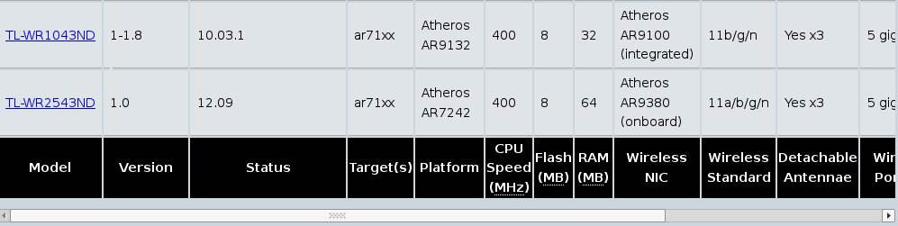

Firmware mit Meshkit generieren lassen¶
Wichtige Infos zum Router sammeln¶
Um eine passende Firmware für das eigene Routermodell zu generieren muss man zunächst einige Daten zum Router kennen:
- Chipsatz
- Chipsatz des/der WLAN-Interfaces
- Größe des RAM
- Größe des Flash-Speichers
Diese Daten finden man in der Table of Hardware im OpenWrt Wiki. Zu den meisten Routermodellen gibt es auch eine Detailseite mit weiteren Infos. Diese Seite sollte man ebenfalls zumindest kurz überfliegen. Hier finden sich im Allgemeinen auch Infos zum Flashen und zur Rettung des Routers falls beim Flashen etwas so richtig schief ging.
Beispiel:
Wir wollen die Daten für einen TP-Link WR1043ND zusammentragen. In der Table of Hardware sehen wir folgendes:
Daraus können wir entnehmen:
- Der Chipsatz gehört zur AR71XX Familie
- WLAN benutzt Atheros Hardware
- Der RAM ist 32 MB groß
- Flash ist 8 MB groß
IP-Adresse(n) registrieren¶
Nun muss noch mindestens eine IP-Adresse aus dem Freifunknetz für den Router registriert werden. Hier hat jede Community ihre eigenen Seiten zur Registrierung, im Allgemeinen kann man sich hier jedoch selbst bedienen und einfach eine noch nicht vergebene Adresse für seinen Knoten reservieren.
Registrierungsseiten in den einzelnen Communities:
- Augsburg: Als Benutzer auf http://augsburg.freifunk.net einloggen und “Node registrieren”
Firmware generieren¶
Das Erstellen von Firmwareimages erfolgt in drei Schritten:
Grundlegende Systemeinstellungen¶
Öffne die Meshkit Webseite im Browser. Du siehst nun folgendes:

Erklärung:
Login bzw. Registrieren
Hier kann man einen User für Meshkit registrieren. Dadurch wird es möglich, einige Datenfelder beim Generieren neuer Images bereits auszufüllen, z.B. Community, Adresse oder SSH Public Keys. Es ist nicht notwendig einen Benutzer im Meshkit zu registrieren. Wer aber öfter Images generiert dem kann die Registrierung ersparen, bei einigen Feldern immer und immer wieder die selben Daten einzugeben.
Geräte Vorauswahl
Im unteren Bereich von Meshkit befinden sich einige Links zu Geräten, die häufig verwendet werden. Klickt man auf einen dieser links, dann wählt Meshkit automatisch das richtige Target (und in Schritt 2 auch das passende Profil) für dieses Gerät. Wenn ein Gerät nicht in dieser Liste steht dann heisst das nicht, dass es nicht unterstützt wird, sondern nur, dass man Target und im nächsten Schritt Profil manuell auswählen muss.
Einstellungen
Option
Beschreibung
Community
Wähle deine Community aus. (TODO: Was tun wenn es noch keine gibt?)
Target
Wähle ein passendes Target (siehe Infos zum Router sammeln)
Expertenmodus
Wenn ausgewählt, dann werden im nächsten Schritt wesentlich mehr Optionen zur Konfiguration des Routers angezeigt.
Keine Konfiguration
Erstellt ein Image, es wird aber keine Konfiguration durchgeführt. Dies ist vor allem nützlich um Images zu erhalten, die für sysupgrade (TODO: Seite zu sysupgrade anlegen) verwendet werden können.
Email
Wenn angegeben wird nachdem das Image gebaut wurde eine Mail an diese Adresse geschickt.
Absenden
Nachdem alle Einstellungen getätigt wurde klicke auf Absenden um zu Schritt 2 des Meshkits zu gelangen, wo weitere Einstellungen vorgenommen werden müssen.